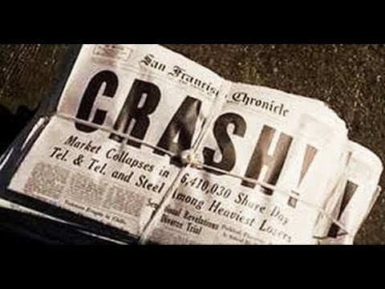

Questão 1
(UNITAU) O fato concreto que desencadeou a Segunda Guerra Mundial foi:

(UNITAU) O fato concreto que desencadeou a Segunda Guerra Mundial foi:
(UFPE) Em 24 de outubro de 1985, chefes de Estado, reunidos em Nova Yorque, comemoraram o 50° aniversário da Organização das Nações Unidas – ONU. O que representa essa organização?
(PUC- Campinas) Em relação às causas da Primeira Guerra Mundial é correto afirmar que:
Qual alternativa descreve de forma correta a participação do Brasil na Primeira Guerra Mundial?
(Cefet – SP) A chamada Crise de 1929 caracterizou-se por um colapso no sistema financeiro mundial no período do entreguerras, isto é, no intervalo entre a Primeira e a Segunda Guerra Mundial.
Tal crise também é identificada com:
Para conter os efeitos da depressão que ocorreu após a Crise de 1929, o governo dos Estados Unidos lançou o programa intitulado: